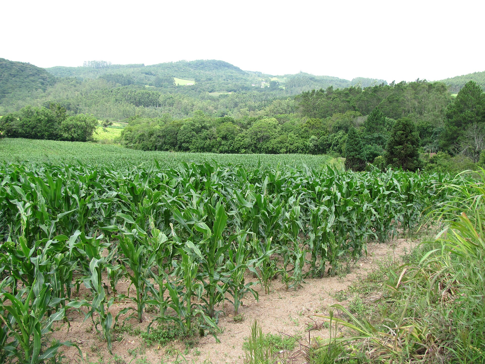
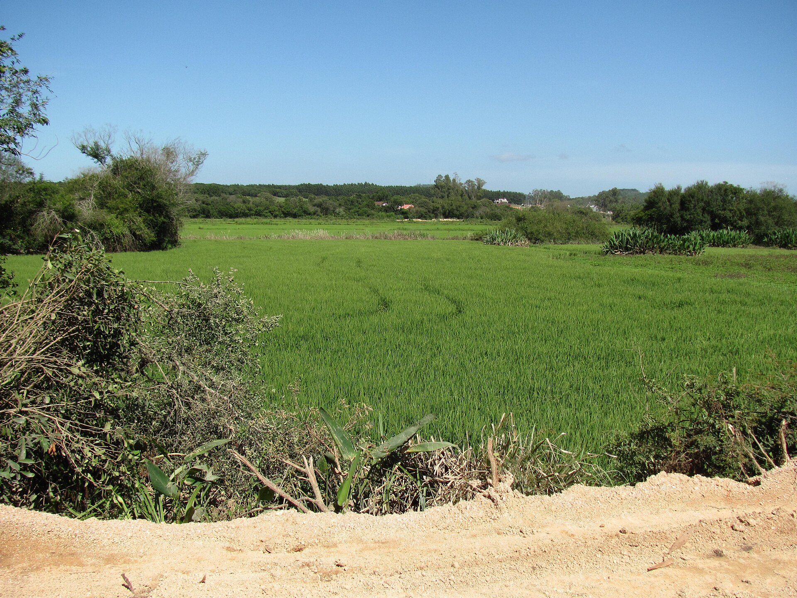
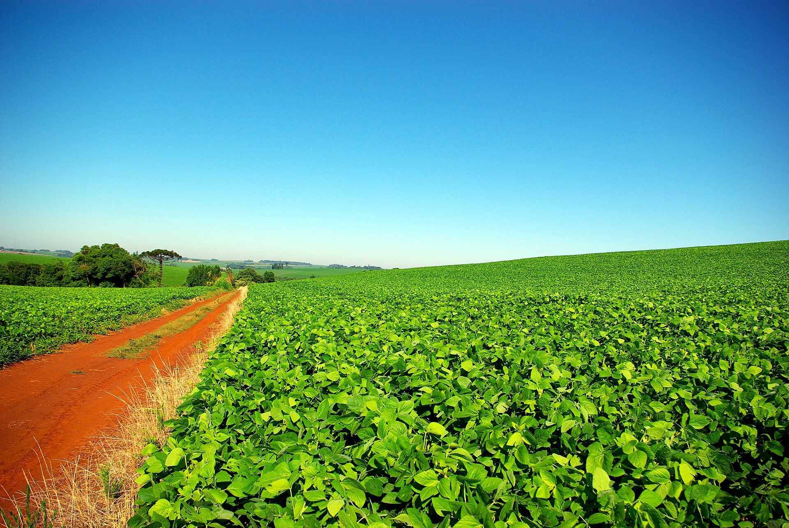
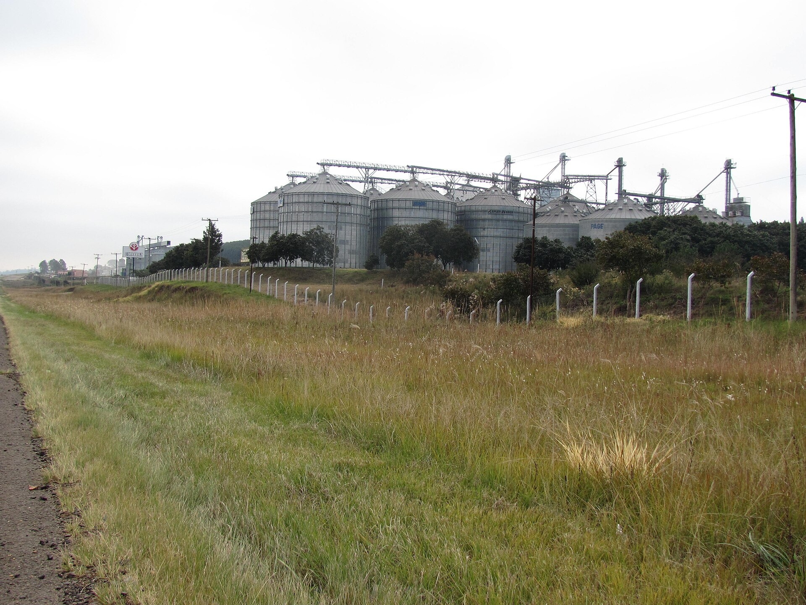

Equilíbrio, análise marginal e cenários
O plano encontra o imprevisto
Nenhuma safra sai como o orçamento. O gestor que só conhece o cenário-base descobre o risco quando ele chega. Quem sabe onde fica a fronteira do prejuízo decide antes.
- Ponto de equilíbrio: onde exatamente a receita empata com o custo?
- Análise marginal: a próxima dose de insumo ainda se paga?
- Cenários: o projeto sobrevive ao ano ruim?
A fronteira entre lucro e prejuízo
O ponto de equilíbrio (PE) é o nível de produção ou de preço em que a receita iguala exatamente o custo: nem sobra, nem falta. São os nivelamentos da T5, agora como instrumento central de decisão.
Três custos, três fronteiras
O "custo" da fórmula pode ser o COE, o COT ou o CT, e cada escolha desenha uma fronteira diferente, na mesma lógica das camadas da T5:
| PE sobre | A fronteira que desenha | Abaixo dela |
|---|---|---|
| COE | o caixa do ciclo se paga | cada unidade piora o caixa: alarme máximo |
| COT | repõe patrimônio e remunera a família | a atividade vive de consumir o que tem |
| CT | vale mais que arrendar e aplicar | viável no caixa, mas deixando riqueza na mesa |
O PE sobre o COE é o alarme de curto prazo; o PE sobre o CT é a régua da viabilidade: o mesmo par de leituras das margens.
Quanta folga o projeto tem?
A margem de segurança (MS) mede a distância entre o que se espera produzir e o mínimo necessário, em percentual: quanto a produção pode cair antes do prejuízo.
É o principal indicador de risco de um projeto agropecuário: MS de 40% tolera seca moderada e preço fraco; MS de 10% quebra com uma geada.
Exemplo do site: soja que precisa de 38 sc/ha para cobrir o COE, com expectativa de 60 sc/ha → a produção pode cair ~37% antes de não pagar nem o caixa.
Da folga à decisão
- Seguro agrícola: com MS de 10%, o seguro (2 a 5% do custeio) se justifica plenamente; com MS de 40%, é escolha, não necessidade.
- Comercialização: PE de preço em R$ 90/sc com mercado a R$ 130: há margem para escalonar a venda. PE em R$ 88 com mercado a R$ 95: vender exige cautela.
- Escala: MS estreita numa área grande é exposição grande; às vezes a decisão certa é plantar menos e proteger mais.
A lavoura não responde em linha reta
A função de produção relaciona a quantidade de insumo ao produto obtido, com a tecnologia dada. Na prática: fixa-se tudo e varia-se um insumo por vez.
- PT: produto total: o acumulado com X unidades do insumo.
- PM: produto médio: PT ÷ X, a eficiência média.
- PMg: produto marginal: ΔPT ÷ ΔX, o que a última unidade acrescentou: a base de toda a análise marginal desta aula.
As três fases da resposta
| Fase | O que acontece | Leitura |
|---|---|---|
| I | PMg cresce: o insumo corrige deficiência grave | abaixo da eficiência mínima: aplicar mais |
| II | PMg cai, mas segue positivo: o PT ainda sobe | zona racional: o ótimo econômico está aqui |
| III | PMg negativo: excesso derruba o PT | toxicidade, acamamento: ninguém racional opera aqui |
A fase II é a lei dos rendimentos decrescentes: a partir de certo ponto, cada unidade adicional rende menos que a anterior. Vale para N no milho, concentrado na vaca, lotação no campo: é regularidade, não exceção.
A pergunta certa é sempre sobre a próxima dose
Se cada dose rende menos que a anterior, existe um ponto em que a dose seguinte deixa de se pagar. Encontrá-lo exige comparar duas grandezas na margem:
- RM: receita marginal: o valor do produto extra da última unidade (PMg × preço do produto).
- CM: custo marginal: o custo dessa unidade de insumo.
Aplicar além desse ponto reduz o lucro, mesmo com a produção ainda subindo.
Máximo lucro ≠ máxima produção
Milho a R$ 78/sc, ureia a R$ 4,20/kg (insumo + aplicação): registros de três safras de um produtor do Alto Uruguai (Parte III.3 do site).
| Ureia (kg/ha) | Milho (sc/ha) | RM (R$/kg) | CM (R$/kg) | Leitura |
|---|---|---|---|---|
| 40 | 118 | 54,60 | 4,20 | RM > CM: seguir |
| 80 | 138 | 39,00 | 4,20 | RM > CM: seguir |
| 120 | 152 | 27,30 | 4,20 | ≈ ótimo econômico |
| 160 | 160 | 15,60 | 4,20 | passou do ponto |
| 200 | 163 | 5,85 | 4,20 | quase nada, pagando caro |

A máxima produção está em 200 kg/ha; o máximo lucro, perto de 120. A tabela só existe porque alguém anotou dose e produção por três safras. Sem registro, não há análise marginal, apenas estimativa.
Taxa variável é análise marginal por zona
A dose ótima depende da resposta da lavoura, e a resposta muda de zona para zona: solo corrigido responde pouco a mais adubo; zona deficiente responde muito.
- Dose única na média: sobra insumo onde não responde, falta onde responderia: desperdício dos dois lados.
- Taxa variável: resolver RM = CM em cada zona de manejo: o mapa de prescrição aplica essa lógica ponto a ponto.

É o argumento econômico central da AP: o equipamento não cria a lógica, apenas a executa, hectare a hectare. Se ele mesmo se paga é avaliado na T8.
Um único número esconde o risco
Projetar um único resultado, produtividade exata, preço exato, é apostar que nada desvia. A análise de cenários não elimina o risco: torna-o visível e mensurável, em três versões do futuro:
| Cenário | Premissas típicas | Pergunta que responde |
|---|---|---|
| Pessimista | produtividade −15 a −20% · preço −10 a −15% · custos +5 a +10% | qual o pior prejuízo provável? sobrevive-se a ele? |
| Base | médias históricas, preços atuais, orçamento | qual o resultado esperado? |
| Otimista | produtividade +10 a +15% · preços em alta · custos no orçado | qual o potencial máximo? |
As premissas não são chute: vêm da série histórica da região (CONAB, EMATER/RS, IRGA) e da variação real dos preços (CEPEA).
Como decidir com os cenários
| Se… | Diagnóstico | Decisão típica |
|---|---|---|
| o pessimista já é viável | baixo risco | avançar, com menos proteções |
| o pessimista dá prejuízo moderado | atenção | seguro, venda antecipada, reduzir escala |
| o pessimista seria catastrófico | repensar | escala ou margem incompatíveis com o risco da região |
| só o otimista fecha | aposta, não investimento | não avançar sem proteções significativas |

O arroz gaúcho em 2025/26
Levantamento oficial do IRGA para a safra 2025/26 (lavoura média do RS, publicado em junho de 2026):
| Item | Valor |
|---|---|
| Custo total (CT) | R$ 15.770,36/ha |
| custo variável (74,7% do CT) | R$ 11.781,29/ha |
| Produtividade média | 174,79 sc/ha |
| Custo total por saca | R$ 90,22/sc |
| Custo variável por saca | R$ 67,40/sc |
| Preço de referência | R$ 61,02/sc |
Uma das maiores produtividades de arroz do mundo, e um preço que não cobre o custo. Consulte o preço CEPEA vigente para comparar com os valores usados aqui.
PE de preço: a conta em três linhas
O mercado paga R$ 29,20 abaixo do custo total, e R$ 6,38 abaixo até do custo variável: no preço de referência, cada saca colhida não repõe nem o desembolso que a produziu.
Prejuízo econômico na lavoura média: ~R$ 29,20/sc × 174,79 sc/ha ≈ R$ 5.104/ha.
Quando o PE fica acima do teto
Para empatar com o custo total seriam necessárias 258 sc/ha, além do teto biológico da cultura. Nem o custo variável fecha: a MS é negativa (−10,5% sobre o variável, −47,8% sobre o CT).
O que o gestor faz com isso?
- Curto prazo: com a lavoura plantada, colher ainda é racional se o preço cobrir o custo que falta desembolsar; decisão de MB, não de LE.
- Comercialização: PE de preço em mãos, cada centavo acima de R$ 67,40 recupera desembolso; escalonar venda e armazenar viram decisões calculadas.
- Próxima safra: replantar exige cenário. O pessimista repete 2025/26. Reduzir área, cortar custo, arrendar? A resposta reúne a conta da T5 e a desta aula.
É a situação real de milhares de produtores gaúchos nesta safra, e o motivo de o PE ser a primeira conta do técnico, não a última.

O cenário-base da soja
A lavoura da T2: 50 ha, 60 sc/ha esperadas, R$ 128/sc posto cooperativa. Custos didáticos por hectare: COE R$ 4.480 e CT R$ 5.760 (equivalente a 45 sc/ha, na linha dos levantamentos da safra 25/26 no RS).
Folga de 25% até o prejuízo econômico e de 41,7% até o caixa: projeto saudável no cenário-base. O preço, porém, não é fixo.
O preço da soja depende de Chicago e do câmbio
- Julho de 2026: indicador CEPEA/Paranaguá a R$ 141,02/sc (17/jul), maior nível em seis meses, +5,6% no mês; o interior do RS acompanha com desconto de frete.
- O dólar no mesmo mês: recuou de mais de R$ 5,20 no início de julho para R$ 5,09 (20/jul); a alta veio de Chicago e do prêmio, apesar do câmbio.

Duas variáveis fora do controle do produtor, multiplicando-se. É exatamente por isso que o preço entra nos cenários como faixa, nunca como certeza.
A mesma lavoura, três resultados
| Cenário | Premissas | RL (R$/ha) | CT (R$/ha) | LE (R$/ha) | Projeto (50 ha) |
|---|---|---|---|---|---|
| Pessimista | 48 sc × R$ 109 · CT +5% | 5.068 | 6.048 | −980 | −49.000 |
| Base | 60 sc × R$ 128 | 7.440 | 5.760 | +1.680 | +84.000 |
| Otimista | 66 sc × R$ 138 | 8.823 | 5.760 | +3.063 | +153.150 |
RL = RB − 3,13% de encargos da venda (Funrural 1,63% + comercialização 1,5%), como na T2. Pessimista: produção −20%, preço −15%; otimista: produção +10%, preço firme como o de julho/2026.
Entre +153 mil e −49 mil
O mesmo projeto, com as mesmas 50 ha e o mesmo manejo, produz um intervalo de R$ 200 mil entre o melhor e o pior futuro provável.
- O pessimista dá prejuízo moderado e sobrevivível: quadro de "atenção"; seguro agrícola e venda escalonada entram na conta, justificados pelo número, não pela impressão de risco.
- Uma MS de 25% que parecia confortável desaparece quando preço e produção caem juntos, situação comum no RS: estiagem derruba a produção estadual sem derrubar o preço de Chicago.
- Contraste com o arroz: no caso do arroz, nem o otimista cobre o CT. Os cenários também mostram quando o problema é a atividade, não apenas o ano.
O passo 6 vira máquina de cenários
O simulador propaga sozinho: mexer no passo 1 e ler o passo 6. Anotar antes de restaurar, o número pessimista some quando a base volta.
Tarefa de saída: o cenário pessimista
Cada grupo registra, no campo de observações do passo 6, o cenário pessimista do próprio projeto:
- As premissas: quanto de queda de produção e preço, e por quê (série da região, não palpite).
- O resultado: LE e MS no pessimista, comparados com a base.
- A decisão: o que o número recomenda: seguro? venda antecipada? escala menor? E o custo dessa proteção lançado no COE.
Checklist de saída
- PE de produção e de preço do projeto calculados (sobre COE e sobre CT)
- MS do cenário-base anotada
- Cenário pessimista rodado no simulador: LE e MS anotados
- Premissas e decisão registradas no campo de observações do passo 6
- Simulador restaurado ao cenário-base
Terminou antes? Rode também o otimista, e descubra se o seu projeto é investimento ou aposta.
T7: Crédito rural e fluxo de caixa
Os cenários mostram se o projeto aguenta o ano ruim. A T7 trata de com que dinheiro ele atravessa o ano: Plano Safra, enquadramento (Pronaf, Pronamp), custeio × investimento, e o fluxo de caixa que o banco vai querer ver.
- Revisar no site: Parte III, blocos 2 a 5 (função de produção, análise marginal, equilíbrio, cenários) + autoavaliação.
- Trazer para a T7: o cenário pessimista registrado; ele dimensiona o crédito e a proteção.
Fontes e créditos
Referência bibliográfica geral: KAY, Ronald D.; EDWARDS, William M.; DUFFY, Patricia A. Gestão de propriedades rurais. 7. ed. Porto Alegre: AMGH, 2014. E-book. ISBN 9788580553963. Disponível em: Minha Biblioteca. Acesso em: 29 maio 2026. Dados, preços e taxas citados nos exemplos: fontes indicadas em aula e atualizadas a cada oferta.
Material didático elaborado pelo Prof. Róberson Macedo de Oliveira, Colégio Politécnico da UFSM, com apoio de inteligência artificial (Claude, Anthropic) na organização didática e diagramação. O conteúdo pedagógico, a metodologia e as decisões de planejamento são de responsabilidade do docente.
Material de estudo: Parte III.2: Fatores e função de produção · III.3: Análise marginal · III.4: Ponto de equilíbrio · III.5: Cenários · autoavaliação · simulador de projetos · versão impressa deste material = apostila da aula (Ctrl+P).